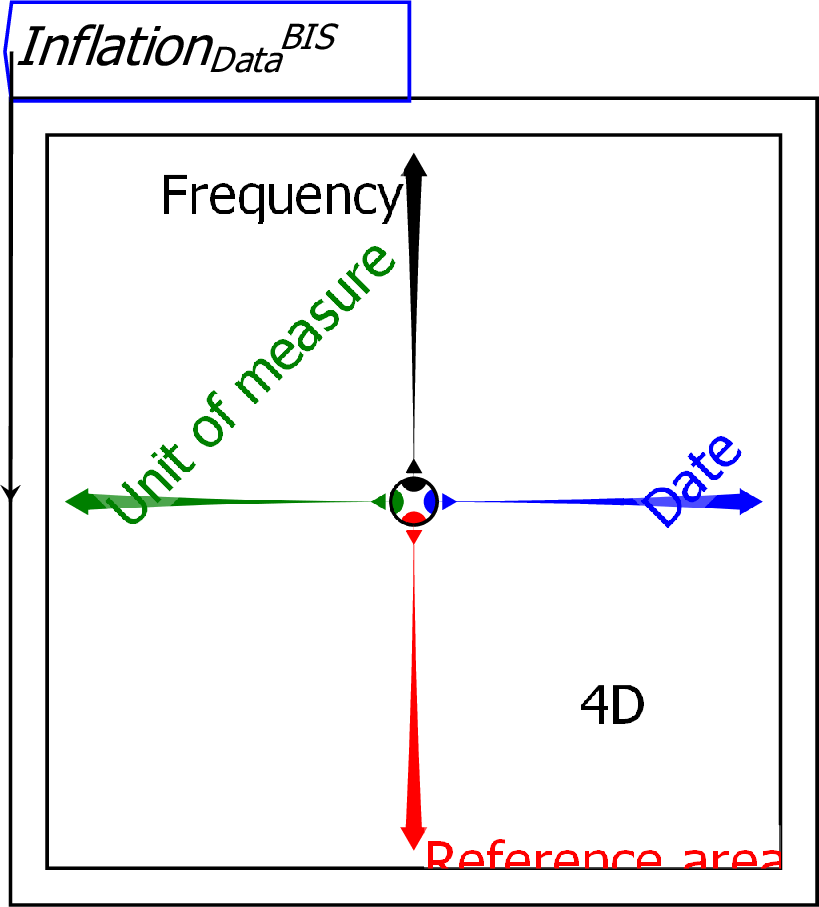
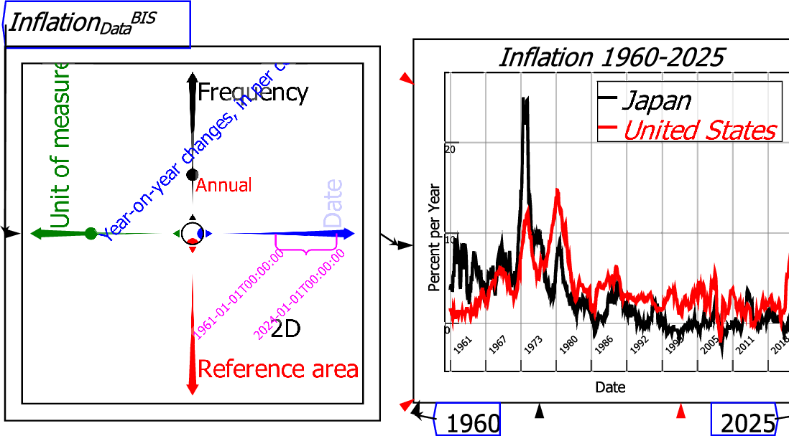
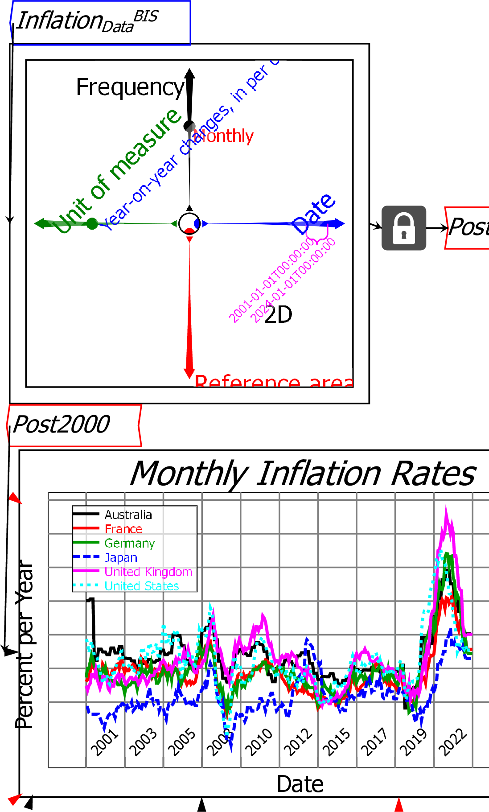
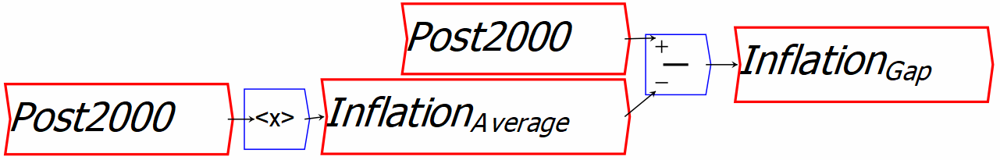
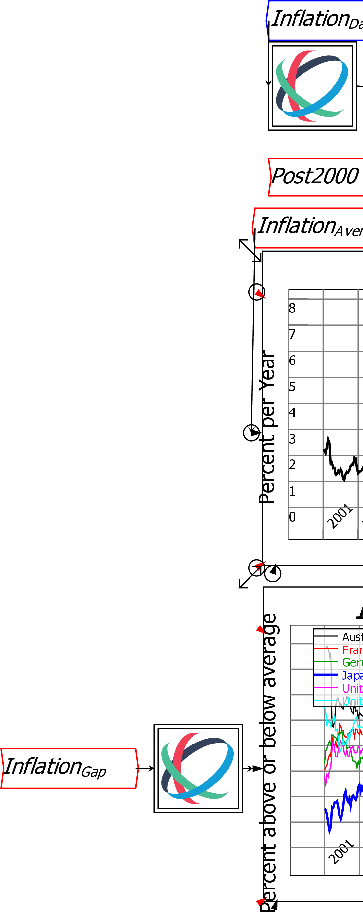
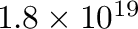

Ravel is a data analysis program which is an alternative to spreadsheets and existing business intelligence programs (Tableau, Power BI, etc.). It has two key features that distinguish it from all other programs in this space:
Unlike spreadsheets, which are fundamentally limited to two dimensions (rows and columns), Ravel supports an effectively unlimited number of dimensions. Ravel's key feature--also called a Ravel--is a visual tool for manipulating and analysing multidimensional data, which can handle as many dimensions as your data contains. By contrast, to handle more than 2 dimensions in a spreadsheet, the go to tool is a Pivot table, which provides some sort of control over the slice through the multidimensional hypercube. Needless the say, pivot tables are not for the faint of heart!
Ravel is primarily focussed on numerical data, although it is possible to analyse purely symbolic data in ``counter mode''.
This is a blank Ravel--a Ravel with no data attached to it. The axes are indicative examples, and will be replaced by the dimensions of your data, once you attach a data parameter to the Ravel:

To use a Ravel, you first need to import a data file-at present this must be a CSV file (other data sources will be added in later releases). Once the data is imported, the data object can be attached to a Ravel. This is a Ravel with data attached:

There are many ways to manipulate and display data directly from a Ravel. This is a Ravel with data attached and selected for graphing: the ``Year on Year Changes'' data is selected from the Unit of Measure axis; two countries (Japan and the United States) are selected from the Reference area axis via the Pick axis slices command; Monthly data is chosen from the Frequency axis; and Calipers are applied to the Date axis to select data from 1960 till 2024.

Ravel the object itself makes it far easier to drill down into and visualise data than using either a spreadsheet, or the Pivot Tables that standard Business Intelligence program use.
Ravel the program enables easy analysis of data using self-documenting flowchart formulas. This is a Ravel with data selected-for six countries, on the annualised monthly inflation rate, for dates from January 2001 till January 2024-and assigned to a variable (``Post2000'').

The data is analyzed by (a) working out the average inflation rate for the selected countries, and (b) subtracting the average from the actual inflation rate for each country.
The average inflation rate is calculated using the formula shown below,
where the
 operator works out the average
inflation rate over time for the six countries in the variable Post2000
to generate the variable InflationAverage.
This average is then subtracted from the country-specific data in
Post2000:
operator works out the average
inflation rate over time for the six countries in the variable Post2000
to generate the variable InflationAverage.
This average is then subtracted from the country-specific data in
Post2000:

This one formula is applied to every country in the Ravel (six countries in this case) and every quarterly data point (80 quarters). Doing the same analysis with a spreadsheet would require writing an obscure cell reference formula and replicating it across 480 cells.
This example shows average inflation outcomes for the six countries, and the deviation of each of them from the average.

This illustrates the capacity of Ravel to rapidly provide insights from data-in this case, that the best-performing country during the post-Covid inflation was Japan, and the worst performing were the USA and UK. This is noteworthy, because both the USA and UK sharply increased interest rates with the intention of reducing inflation, while Japan kept its interest rate constant. Perhaps then, interest rates aren't effective at controlling inflation rates?
These examples are drawn from economics, mainly because Ravel's inventor is an economist (and a contrarian one at that). But Ravel can analyze any data you give it--marketing data, scientific data, production data, whatever. It can also handle enormous data sets, far larger than are manageable with Excel.
Ravel can handle sparse data--it requires 16 bytes per data point, so for example, a 16GB computer will technically be able to handle up to a billion data points, although in practice it is unwise to exceed more than half that. There is no limit to the number of rows and columns it can ingest, subject to the overall limit due to available memory, in contrast to Excel's limits of 1,048,576 rows by 16,384 columns. One other limit to keep in mind is that the size of the datacube (product of sizes of all the dimensions) cannot exceed . This is something to bear in mind when importing data, as the datacube size increases exponentially with the number of dimensions.
We hope these examples show how easy it is to turn data into information using Ravel.